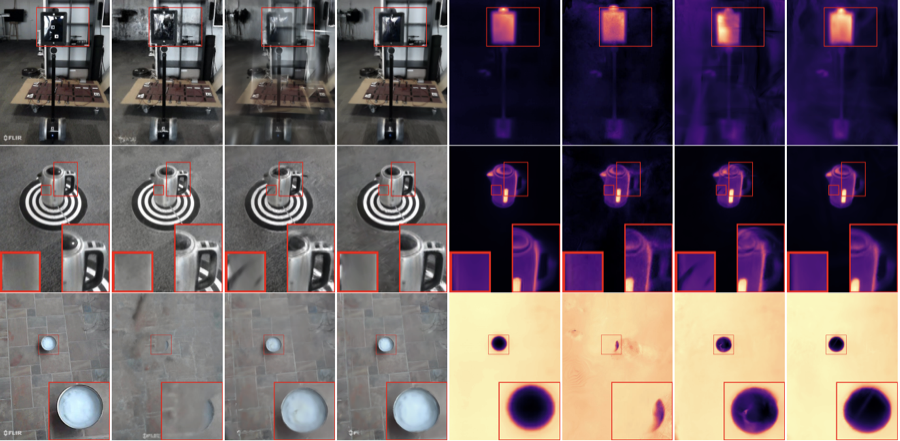

|
Minseong Kweon I’m MS student in Robotics at University of Minnesota, Twin Cities. Currently, I am fortunate to be advised by Prof. Lingjie Liu at the Penn Computer Graphics Lab. Before, I received my bachelor’s degree at Pusan National University under the supervision of Prof. Jinsun Park. My research interests lie in 3D computer vision and machine learning for physically grounded geometric perception in robotic and intelligent systems. |

|
News
|
Under Review |
|
DarkVGGT: Seeing Through Darkness Using Thermal Geometry without Daylight Tax
Minseong Kweon, Wenyuan Zhao, Nuo Chen, Lulin Liu, Huiwen Han, Zihao Zhu, Srinivas Shakkottai, Chao Tian, Zhiwen Fan Paper|Project Page |
|
Swimm3R: Splatting with Medium-aware SfM for Underwater 3D Reconstruction
Minseong Kweon, Junaed Sattar Paper|Project Page |

|
All-day Depth Completion via Thermal-LiDAR Fusion
Janghyun Kim, Minseong Kweon, Jinsun Park, Ukcheol Shin Paper |
Publications |
|
OceanSplat: Object-aware Gaussian Splatting with Trinocular View Consistency for Underwater Scene Reconstruction
Minseong Kweon, Jinsun Park The 40th AAAI Conference on Artificial Intelligence (AAAI 2026) (Acceptance Rate: 17.6%) Paper|Project Page |
|
 |
MrGS: Multi-modal Radiance Fields with 3D Gaussian Splatting for RGB-Thermal Novel View Synthesis
Minseong Kweon, Janghyun Kim, Ukcheol Shin, Jinsun Park ICRA 2025 Thermal Infrared in Robotics Workshop (Received Best Poster Award) Paper |

|
CAR-Stereo: Confidence-aware Adaptive Disparity Refinement for Real-time Stereo Matching
Chanill Park, Janghyun Kim, Minseong Kweon, Jinsun Park IEEE Robotics and Automation Letters (RA-L) Paper |

|
NoiseGS: Boosting 3D Gaussian Splatting with Positional Noise for Large-Scale Scene Rendering
Minseong Kweon, Kai Cheng, Xuejin Chen, Jinsun Park Eurographics 2025 (Short Papers) (Acceptance Rate: 53%) Paper|Project Page |

|
ULTRON: Unifying Local Transformer and Convolution for Large-scale Image Retrieval
Minseong Kweon, Jinsun Park ACCV 2024 (Acceptance Rate: 32%) Paper |
Academic Services
|
|
|